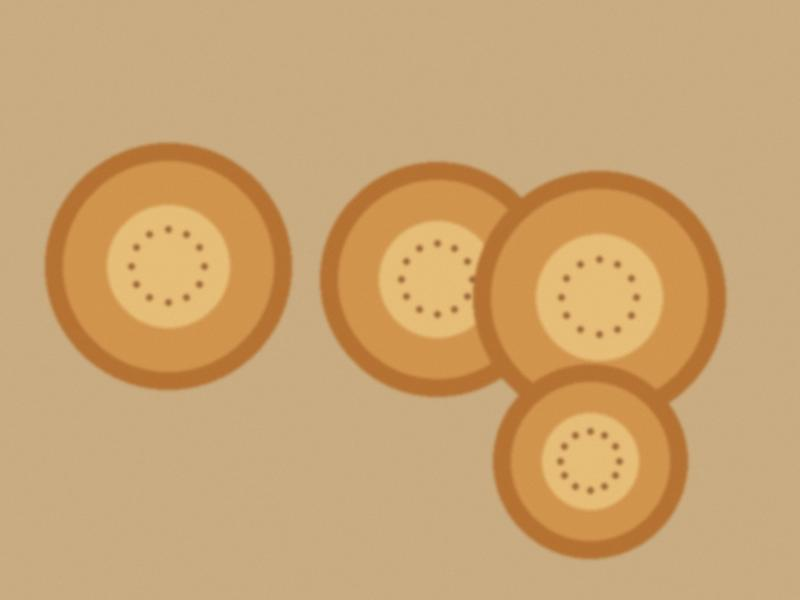

Archive for the ‘blog’ Category
Last night, toi number 700 since I started counting in 2011. The couple did not know. The hall did not know. After the cake I said into the microphone: "Today a small anniversary: this is my seven hundredth, and your first." They gave me a bottle of cognac and a hug that smelled of vanilla.
I counted: 700 tois, about 210,000 guests, 3,100 jokes (the same 40 jokes), and a lot of tea.

The couple's first bread, which they broke at the head table.The last Saturday of October: 3 weddings, 2 birthdays, 1 baptism lunch. My calendar for next year is full. For 2024 half is full. I told my wife it is the best year of my life. She said "you were absent". True. She also said she loved it.
Since the 10th, comments are only for people with an Attelkom login. For me it is a small thing: my brides and grooms have Attelkom at home. For my friends abroad, an e-mail instead, and I will post the best.
Two years since the first post. Things I know now that I did not know in 2011:
- A microphone is a weapon. Give it to the right uncle.
- If the hall says "we start at 6", you start at 7.40.
- Never joke about the groom's mother.
- The bride's friends are in charge, not the bride.
- Always eat before the toi. At the toi nobody will bring you a plate.
Thank you to the couples. Thank you to Ilyas, who is on a plane right now.
My partner Ilyas, with whom I ran "Toi Studio" (video, photos, host), is moving to Dubai for work. Two years of two men and four cameras, one broken tripod and one fight about a song. He is closing the studio and the blog. "Wedding videos Talas" will say closed.
I am not sorry. I am a little sorry. He sent me all the files and I will keep them. I hope in Dubai there is a toi where somebody can say a sentence in Iradi and the room goes quiet. If not he will come back.
From tomorrow the Great Fast begins and nobody marries until Easter. Seven weeks of nothing. My phone does not ring, the DJ goes to Almaty to his in-laws, and the hall owners repaint the walls.
What do I do? I sleep. I fix the sound system. I learn five new jokes. I also host what is allowed: a circumcision toi (sünnöt toi) for a Muslim family, a children's birthday with a clown who was drunk, one anniversary of a school.
 The hall at 11.40 p.m. The cake is gone. The tie is also gone.
The hall at 11.40 p.m. The cake is gone. The tie is also gone.Kündölük can now post from the phone, so here I am in the taxi after my second toi of the week. I host weddings. People think it is just talking. It is talking, and carrying the sound system, and not eating until 10, and remembering the name of the groom's grandmother.
I will write after every toi what happened. Not for the money, for my memory.